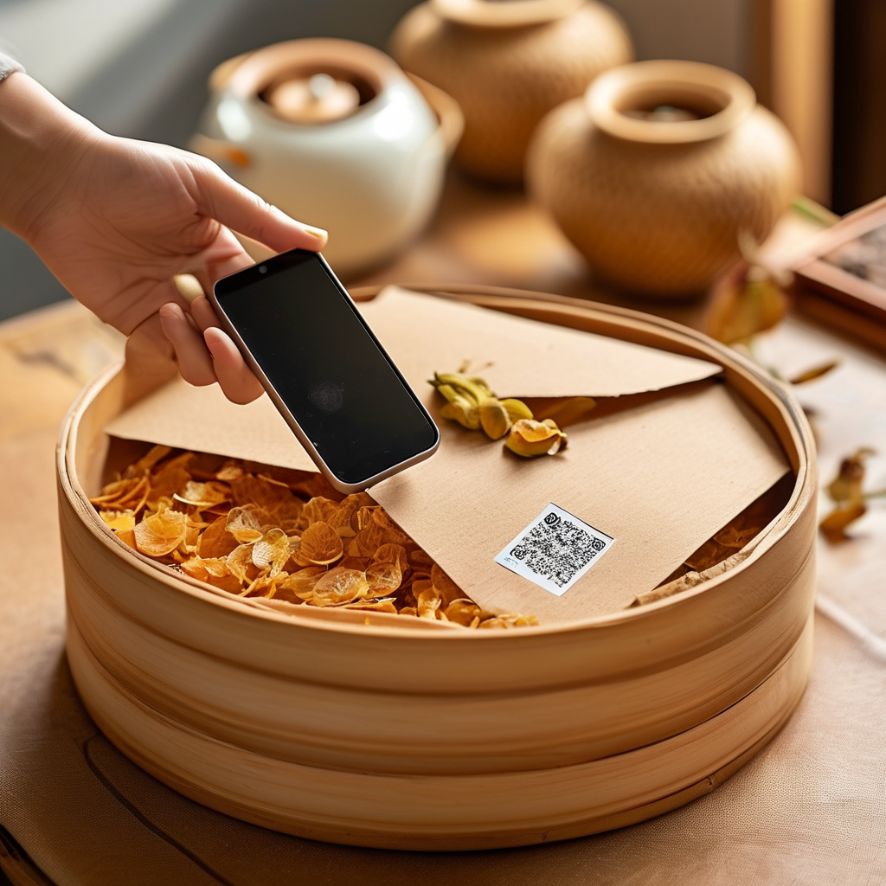

滢滢姐推開阿婆家那扇掉了漆的木門時，堂屋裡堆了三筐青柑，筐邊擱着一卷還沒展開的紅紙。阿婆戴着老花鏡，膝蓋上攤着一份《新會陳皮產業協同發展交流會》的簡報，是鎮政府一早送過來的。
「今年真要簽？」
滢滢姐在阿婆對面坐下來，把紅紙接過來——是古井梓富果圍給阿婆轉來的2026年新會柑鮮果採購意向協議副本。
「1000萬斤？咱們這頭才200來斤，人家那一簽就是1000萬斤。」
滢滢姐笑了一下，沒接話。她知道阿婆不是眼紅，是犯愁。
一、三筐青柑背後的「小年」
阿婆家有30棵老茶枝柑，樹齡都過了20年。往年這個時候，樹下早該鋪滿防草布、架好摘果梯了。可今年樹幹瘦了一圈，葉子也比去年稀。
「是小年。去年掛果太猛，今年樹要歇。」
「歇也歇得太徹底。我早上數過，整片果園裡能摘的果不到去年一半。」
她從屋裡翻出一本發黃的筆記本，上面是2018年以來每年的鮮果產量。滢滢姐順着看下去：2018年3800斤，2019年4100斤，2020年3500斤，2021年4400斤，2022年3900斤，2023年4600斤，2024年4200斤，2025年3800斤，2026年那一欄，阿婆還沒填。
「今年估計2000斤封頂。再扣掉賣鮮果給果圍的，剩下自己開皮的，能曬出多少乾皮？」
滢滢姐在腦子裡過了一遍：20斤鮮果出1斤乾皮，新會柑青柑階段的批量拿貨價比大紅便宜15%左右，再加上今年被喊了大半年的「翻倍漲價」——成本賬其實不複雜，複雜的是人心。
「那1000萬斤採購意向，簽的是古井梓富1700畝的大果圍。咱們這種30棵的小果園，不在那份協議裡。」
「我知道。我愁的不是賣不賣得掉，是賣給誰、誰來認我的皮。」
二、9月28日的預售季，和一紙溯原始碼

簡報上白紙黑字寫着：9月28日，新會陳皮村將開啟2026新會陳皮預售季。
「預售季？那不就是要趕在中秋前開賣？」
「對。中秋、國慶連着過，是禮贈最旺的一週。今年雙節陳皮禮贈踩坑率有89%，其中6到10年的中端禮贈陳皮造假、以次充好佔了76.3%。你想買陳皮送人的那批人，最怕買到染色皮、濕倉催陳皮、外地雜柑冒充皮。」
「那跟咱這30棵老樹有什麼關係？」
「有關係。」滢滢姐指了指簡報另一頁，「新會海關和新會陳皮村共建了一套全鏈條溯源體系，從種植、採收、加工、倉儲到流通，每一片皮都能追到哪塊地、哪棵樹。預售季開賣的皮，每一盒都自帶溯原始碼。」
阿婆沉默了一會兒，慢慢說：「那咱們的皮，也能掛上碼？」
「能掛。」滢滢姐說，「新會區今年7月啟動了2026年度新會柑鮮果產量線上登記申報，覆蓋7、8、9三個月，依託『中國新會陳皮』小程序進入數字化溯源管理系統。提交後數據不可修改。您只要把咱們果園的產量報上去，將來開出來的每一張皮，都能掃碼認祖歸宗。」
阿婆的手在筆記本封面上摩挲了好一會兒：「那我明天就去鎮上問。」
三、阿婆的禮贈清單
阿婆從櫃子裡翻出一張皺巴巴的禮單，上面是給親戚朋友準備的今年中秋陳皮禮：
- 給大姐（廣州，糖尿病）：5年陳老皮1斤，配陳皮紅豆沙方子。
- 給二叔（佛山，常年抽煙）：8年陳老皮2兩，配雪梨陳皮湯。
- 給外孫（深圳，剛工作）：3年陳新手裝1罐。
- 給老客戶陳總（中山，做藥材）：15年陳皮禮盒1盒。
「這張單子我琢磨了半個月，就怕買到染色皮、濕倉催陳皮。前陣子有篇報道講雙節陳皮禮贈消費白皮書，83%的消費者都有過選錯陳皮的尷尬經歷，45%的人因為口感酸澀、陳香淡薄，被收禮人嫌棄。我要是送錯了，一年的交情就敗在這張皮上。」
滢滢姐給阿婆支招：「那咱就按那篇白皮書裡講的7個識別信號一個個避——口感酸澀發苦、無回甘的不要；外觀僵硬、色澤異常的死板不要；香氣雜亂刺鼻、留香短暫的不要；沖泡後軟爛塌縮、湯色渾濁的不要；喝了不舒服的不要；常溫下短時間就返潮發霉的不要；包裝簡陋、無正規標識的不要。」
阿婆聽完笑了一下：「你說的這些，我也懂。難的是買的時候分辨不出。」
「那就買能掃碼的。」滢滢姐說，「中秋前這一波預售季開出來的皮，每一盒都帶溯原始碼，掃一下就知道是哪塊地、哪一年的果、哪個倉陳化的。認碼不認人，比認老闆靠譜。」
阿婆點點頭：「那我這清單裡的皮，都換成帶碼的。」
四、央視帶火的那碗陳皮藥膳
阿婆突然想起一件事：「對了，前陣子我在電視上看到撒貝寧和鍾麗緹去新會陳皮村那家店吃了頓飯，那個陳皮藥膳……」
滢滢姐接上：「是央視《三餐四季》那期節目。」
「對對對，就是那個。」阿婆眼睛亮了，「撒貝寧吃了一碗陳皮什麼湯，連湯底都喝光了。鍾麗緹也吃了。」
「陳皮老鴨湯，新會本地最常見的一道湯。陳皮要5年以上的老皮，配100天左右的麻鴨，慢火煲3個鐘。新會話叫『入方和百藥，入膳和百味』。央視那期節目一播，江門、新會的陳皮藥膳店客流直接翻倍。」
阿婆拍了一下膝蓋：「怪不得今年中秋陳皮禮贈市場熱成這樣，連《三餐四季》這種央視節目都來給新會陳皮打氣。」
「是帶火了一波，」滢滢姐說，「但也帶火了一波假皮、染色皮、外地雜柑皮。所以今年中秋前這波預售季，海關溯源體系才那麼急着落地。咱們趕上好時候——9月28日預售季一開，阿婆您家這30棵老樹的皮，也能掛上碼進禮盒了。」
阿婆長出一口氣：「那我心裡有底了。」
五、那1000萬斤，跟阿婆有什麼關係
滢滢姐陪阿婆坐在堂屋裡，把簡報又看了一遍。1000萬斤鮮果採購意向，簽的是6家大果圍；古井梓富果圍1700畝基地，預計達成200萬到250萬斤採購合作。阿婆家的30棵老樹，產量頂破天2000斤，連梓富果圍的零頭都不到。
「那1000萬斤，跟我有關係。」
「怎麼講？」
「大果圍簽了這份協議，價格就穩了。咱們這種小果園跟着大行情走，不至於被壓價、被拋售。再說海關溯源體系，大果圍帶頭接入，小果園跟着申報，整條鏈上的皮都能掛碼。我那30棵老樹的皮，也能跟梓富果圍的皮一樣，掃出產地、樹齡、採摘時間、倉儲記錄。」
阿婆又翻出那本筆記本：「我算給你聽——20斤鮮果出1斤乾皮，今年估計能出100斤乾皮。留30斤自家吃，剩下70斤，5年的、8年的、15年的，分級裝禮盒，每盒掛溯原始碼，中秋前一週開始發貨。」
滢滢姐問：「那您還擔心什麼？」
阿婆笑了：「擔心的是——9月28日預售季那天，我那70斤帶碼的皮，能不能24小時賣完。」
六、中秋前一週，滢滢姐陪阿婆的最後一個動作
9月22日，距離中秋還有3天，距離9月28日預售季還有6天。
滢滢姐幫阿婆把那三筐青柑搬到門口晾架上。阿婆戴上老花鏡，打開手機上的「中國新會陳皮」小程序，準備把今年的果園產量申報上去。
「30棵老茶枝柑，20年樹齡，」阿婆對着手機念，「今年預計產量2000斤……」
滢滢姐說：「念完提交之後，數據不可修改。」
阿婆的手指懸在「確認」按鈕上，停了三秒。她抬頭看了一眼堂屋門口那三筐青柑，又看了一眼簡報上「1000萬斤」那個數字，最後看了一眼自家那30棵老茶枝柑——葉子雖然稀，但青柑掛得實在，皮面油室飽滿。
「提交。」阿婆按了下去。
手機響了一下，彈出提示：「您的產量數據已納入2026年度新會陳皮數字化溯源管理系統。」阿婆把手機遞給滢滢姐看，屏幕上跳出一個二維碼——是阿婆家這片果園的溯原始碼。
「行，阿婆，咱們這片皮，從今天起有身份證了。」
常見問題
今年中秋陳皮禮贈市場，到底熱到什麼程度？雙節陳皮禮贈踩坑率高達89%，其中6到10年中端禮贈陳皮造假、以次充好佔比76.3%。83%的消費者都有過選錯陳皮的尷尬經歷，45%的人因口感酸澀、陳香淡薄被收禮人嫌棄。市場越熱，假皮越多，今年買陳皮送人，比往年更需要認碼、認溯源。
9月28日新會陳皮村預售季，跟普通消費者有什麼關係？預售季開賣的每一盒陳皮都自帶溯原始碼，掃碼可查產地、採摘時間、倉儲記錄、陳化年份。這是新會海關和新會陳皮村共建的全鏈條溯源體系第一次大規模落地，認碼比認人、認店、認老闆都靠譜。
為什麼是1000萬斤柑果採購意向？8月28日新會陳皮產業協同發展交流會，新會陳皮村與6家果圍簽訂2026年新會柑鮮果採購意向協議，計劃收購鮮果1000萬斤。其中古井梓富果圍1700畝基地，預計200萬至250萬斤。提前鎖定銷路、穩定農戶增收信心。
小年減產，今年陳皮價格會漲多少？今年新會柑是小年，產量比去年明顯減少。但6月已經有預測文寫過「青柑（9月）比大紅便宜15%左右」。建議中秋禮贈剛需用戶在9月28日預售季開啟後第一時間下單，帶溯原始碼的5年陳、8年陳是今年的主力檔位。
央視《三餐四季》對新會陳皮產業影響有多大？節目播出後，撒貝寧、鍾麗緹「食過番尋味」的陳皮藥膳直接帶火新會陳皮餐飲。中秋前這波禮贈市場，疊加溯源體系落地，是新會陳皮從分散小農走向全鏈條監管的關鍵節點。
結語
阿婆把那本記了九年的筆記本合上，說明年這一欄，她要填2000斤。滢滢姐說，填多少不重要，要緊的是這一欄終於有據可查。
下一期，滢滢姐接着聊：同樣是5年陳，帶碼的和不帶碼的，泡出來到底差多少？還有小果園怎麼申報產量、怎麼掛上溯原始碼，一步步教你。
想聞香、想看皮，來新會陳皮村南門牌坊G04找滢滢姐坐坐，店裡常年備着熱茶。今年中秋，你家的陳皮禮盒，記得先掃碼再送人。
想看同期產區動態，可以翻翻《陳皮熱點日報：新會產區預售季臨近，多項政策護航採收期》；想了解採收季標準化進展，看這篇《陳皮熱點日報：新會柑採收季臨近，產業標準化提速》。